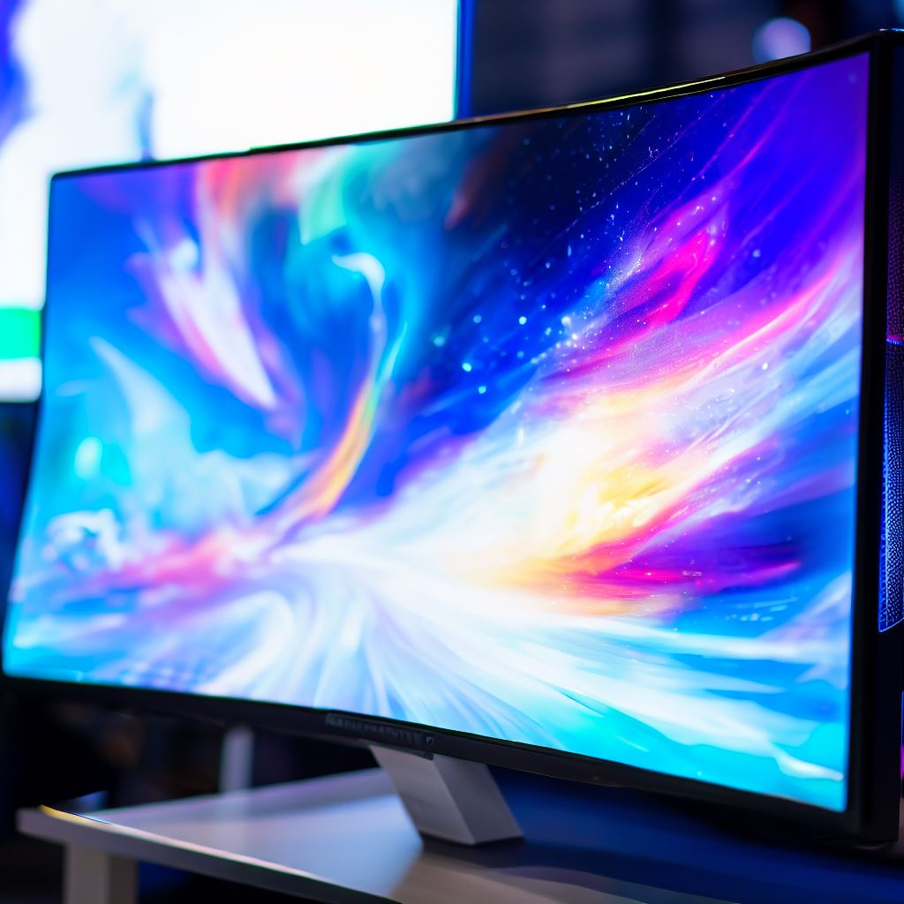

LuminX 32-inch White Gaming Monitor
Meeslepend Display
De LuminX 32-inch Gaming Monitor levert een uitgebreid en meeslepend display dat je in het hart van je games trekt. Met een ruim 32-inch scherm zul je games, films en content ervaren zoals nooit tevoren.
Levendige Beelden
Met een hoge resolutie en levendige kleuren zorgt deze monitor ervoor dat elke pixel scherp is en elke tint rijk is. Of je nu fantastische werelden verkent of deelneemt aan competitief gamen, je zult alles zien met ongeëvenaarde helderheid.
RGB-verlichting
Verhoog je game-opstelling met dynamische RGB-verlichting. De LuminX-monitor is versierd met aanpasbare RGB-verlichtingsstrips die langs de randen dansen en een sfeervolle game-omgeving creëren. Kies uit een spectrum van kleuren en dynamische verlichtingseffecten om bij je gamestemming te passen.
Snelle Verversingssnelheid:
Blijf voorop in de competitie met een bliksemsnelle verversingssnelheid en minimale invoervertraging. Of je nu in een snelle shooter zit of een strategiespel speelt, deze monitor houdt gelijke tred met elke beweging, wat zorgt voor een competitief voordeel.
Adaptive Sync-technologie:
Zeg vaarwel tegen schermtearing en haperingen. De LuminX-monitor heeft adaptive sync-technologie, zodat je gameplay soepel en scheurvrij blijft, zelfs tijdens intense momenten.
Diverse Verbindingsopties:
Verbinding maken is een fluitje van een cent met een reeks poorten, waaronder HDMI, DisplayPort en USB. Sluit met gemak je gameconsole, pc of andere apparaten aan.
Strak Wit Ontwerp:
De LuminX Gaming Monitor heeft een smetteloze witte afwerking die er niet alleen prachtig uitziet, maar ook een vleugje moderniteit toevoegt aan je game-opstelling. Het is een stijlvolle toevoeging die elke game-omgeving aanvult.
In Hoogte Verstelbare Stand:
Pas je kijkervaring aan met een in hoogte verstelbare standaard. Vind de perfecte ergonomische positie voor lange gamesessies, zowel voor comfort als meeslepende gameplay.
Ingebouwde Luidsprekers:
Geniet van game-audio zonder extra hardware. Deze monitor is uitgerust met ingebouwde luidsprekers die helder geluid leveren, waardoor je nog verder in de gamewereld wordt ondergedompeld.
Eenvoudige On-Screen Bediening:
Stem je weergave-instellingen eenvoudig af met intuïtieve on-screen bediening. Pas helderheid, contrast en RGB-verlichtingsvoorkeuren aan zonder enige moeite.